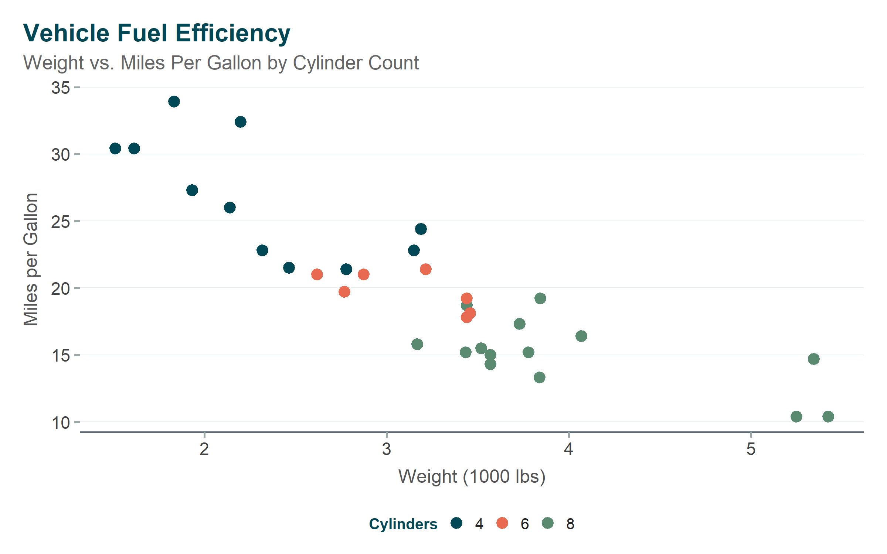
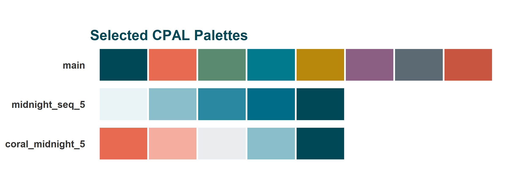

Show code
# Install from GitHub
remotes::install_github("childpovertyactionlab/cpaltemplates")
# Load the package
library(cpaltemplates)
# Set up fonts (run once per session)
setup_cpal_google_fonts()CPAL Data Visualization & Branding Toolkit
cpaltemplates is the official R package for the Child Poverty Action Lab (CPAL) data science team. It provides a comprehensive toolkit for creating consistently branded, accessible, and professional data visualizations, reports, and dashboards.
Consistent Branding: Every visualization, table, and dashboard uses CPAL’s official colors, fonts, and styling.
Accessibility First: All color palettes are designed for WCAG compliance with built-in validation tools.
Rapid Development: Start new projects with pre-configured templates.
# Install from GitHub
remotes::install_github("childpovertyactionlab/cpaltemplates")
# Load the package
library(cpaltemplates)
# Set up fonts (run once per session)
setup_cpal_google_fonts()ggplot(mtcars, aes(x = wt, y = mpg, color = factor(cyl))) +
geom_point(size = 3) +
scale_color_cpal("main_3") +
labs(
title = "Vehicle Fuel Efficiency",
subtitle = "Weight vs. Miles Per Gallon by Cylinder Count",
x = "Weight (1000 lbs)",
y = "Miles per Gallon",
color = "Cylinders"
) +
theme_cpal()
Access CPAL’s carefully designed color palettes:
# Primary brand colors
cpal_colors_primary() midnight deep_teal coral sage slate warm_gray
"#004855" "#006878" "#E86A50" "#5A8A6F" "#5C6B73" "#9BA8AB" view_cpal_palettes(c("main", "midnight_seq_5", "coral_midnight_5"))
Learn more about Colors & Palettes
Consistent ggplot2 themes for every context:
| Theme | Use Case |
|---|---|
theme_cpal() |
Standard visualizations |
theme_cpal_minimal() |
Clean, minimal designs |
theme_cpal_dark() |
Dark backgrounds/presentations |
theme_cpal_print() |
Print-optimized output |
theme_cpal_map() |
Geographic visualizations |
ggplot(mtcars, aes(x = factor(cyl), y = mpg, fill = factor(cyl))) +
geom_boxplot(alpha = 0.8) +
scale_fill_cpal("main_3") +
labs(
title = "Fuel Efficiency by Cylinder Count",
x = "Cylinders",
y = "Miles per Gallon"
) +
theme_cpal() +
theme(legend.position = "none")
Professional tables for reports and dashboards:
mtcars |>
head(6) |>
select(mpg, cyl, hp, wt) |>
cpal_table_gt(title = "Vehicle Specifications")| Vehicle Specifications | |||
|---|---|---|---|
| mpg | cyl | hp | wt |
| 21.0 | 6 | 110 | 2.620 |
| 21.0 | 6 | 110 | 2.875 |
| 22.8 | 4 | 93 | 2.320 |
| 21.4 | 6 | 110 | 3.215 |
| 18.7 | 8 | 175 | 3.440 |
| 18.1 | 6 | 105 | 3.460 |
Start new projects with pre-configured structure:
start_project(
name = "dallas-housing-analysis",
project_type = "analysis",
features = c("git", "renv", "targets")
)
use_quarto_report()Available project types: analysis, quarto-report, quarto-slides, quarto-web, shiny-dashboard, shiny-app, package
Learn more about Project Setup
Create interactive charts with ggiraph:
library(ggiraph)
p <- ggplot(data, aes(x, y)) +
geom_point_interactive(aes(tooltip = label)) +
theme_cpal()
cpal_interactive(p)Learn more about Interactive Features
Build branded dashboards with Bootstrap 5 theming:
library(shiny)
library(bslib)
ui <- page_sidebar(
theme = cpal_dashboard_theme(),
title = "CPAL Dashboard",
sidebar = sidebar(...),
...
)Learn more about Shiny Dashboards
| Section | Description |
|---|---|
| Getting Started | Installation, setup, and first steps |
| Project Setup | Creating and configuring projects |
| Colors & Palettes | Complete color system guide |
| Themes & Styling | ggplot2 theme documentation |
| Plots & Output | Creating and exporting visualizations |
| Tables | GT and Reactable table styling |
| Interactive Features | ggiraph and interactive charts |
| Maps | Geographic visualizations |
| Shiny Dashboards | Dashboard theming |
| Brand & Assets | Brand file management |
| Utilities | Helper functions |
| Workflows | End-to-end examples |
| Function Reference | Complete function index |
| Troubleshooting | Common issues and solutions |